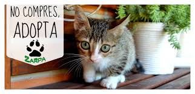

Los Mas fieles Son Los Que No Tienen Nada
Home | Contactenos | Ubicacion
La adopción de animales es el proceso de tomar la responsabilidad de un animal que un dueño previamente ha abandonado o dejado en un refugio de animales. Nuestra fundacion fue creada a principios de la pandemia, ya que solo no nos afecta a los seres humanos sino que a todos los seres vivos, con nuestro equipo de trabajo hemos realizado todo lo posible a nuestro alcance y tenemos solo un mensaje para ustedes "DUELE VER A ÁNGELES SIENDO IGNORADOS, HUMILLADOS Y SUFRIENDO" ADOPTA - AYUDA
| |
Adopta Un Perro |
 | Adopta Un Gato |